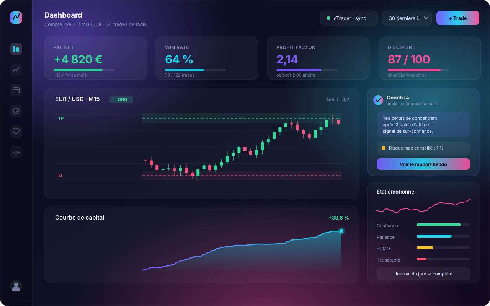
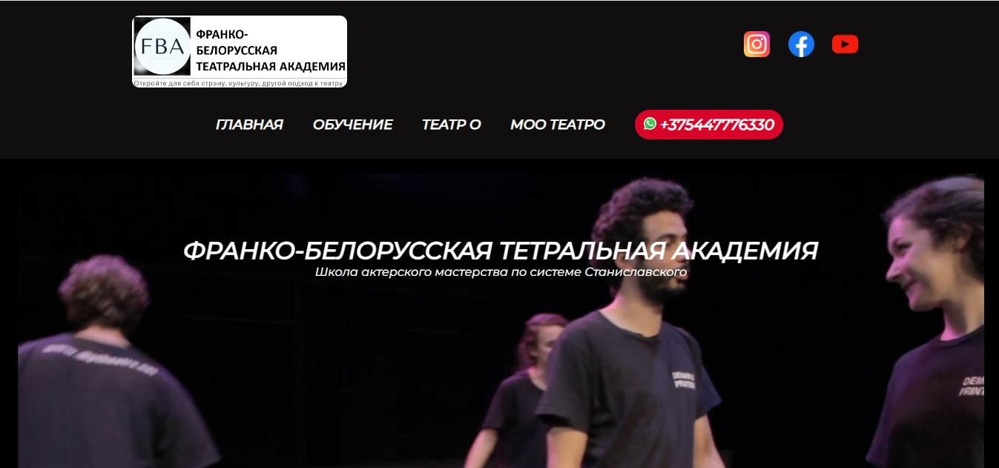
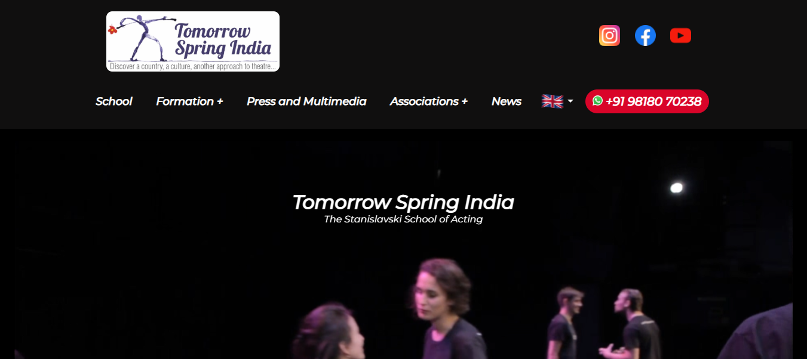
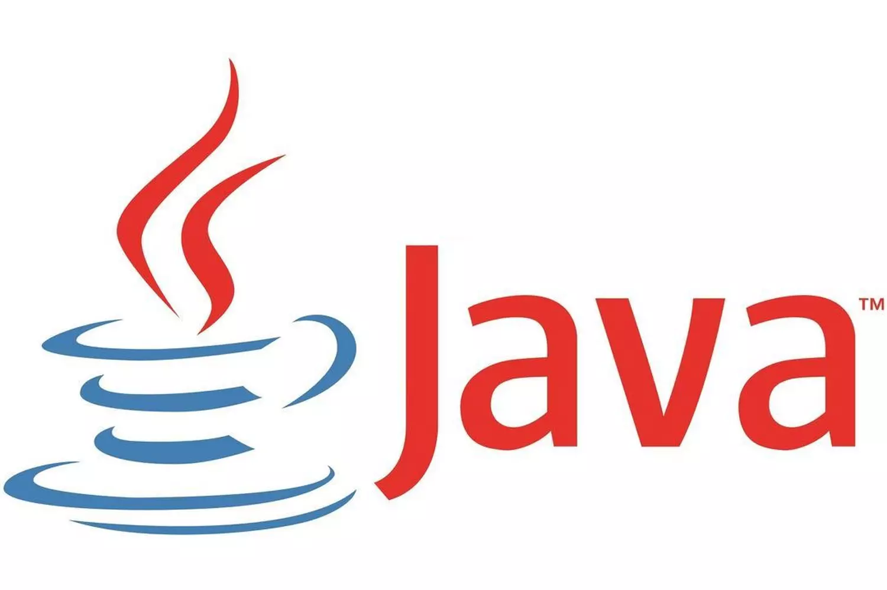
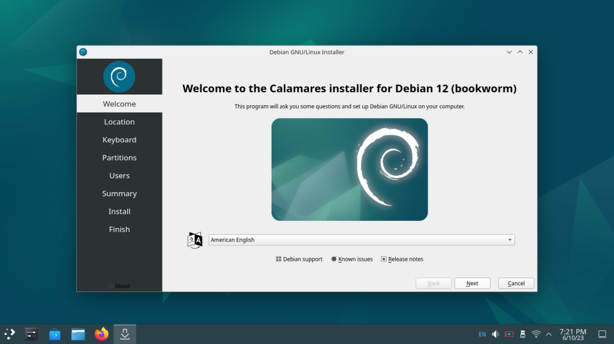

BTS SIO option SLAM
Diplômé en juin 2025 au lycée La Tournelle (La Garenne-Colombes), dans la filière P-TECH accompagnée par IBM, BNP Paribas et Orange. Deux stages en développement web, six certifications, et les bases solides du dev logiciel.
21 ans, BTS SIO SLAM en poche et une obsession : construire des produits qui tournent vraiment. Sur les douze derniers mois j'ai conçu et mis en production TradeVIQ, un SaaS complet — Spring Boot, React, PostgreSQL, paiements Stripe et coach IA. Je rejoins le Bachelor Intelligence Artificielle de l'ETNA en octobre 2026 et je cherche l'entreprise qui m'accueillera en alternance.
Le plus court chemin pour comprendre mon profil : d'où je viens, ce que je construis en ce moment, et ce que je cherche pour la suite.
Diplômé en juin 2025 au lycée La Tournelle (La Garenne-Colombes), dans la filière P-TECH accompagnée par IBM, BNP Paribas et Orange. Deux stages en développement web, six certifications, et les bases solides du dev logiciel.
Depuis le BTS, je développe seul un vrai produit SaaS de bout en bout : back-end Spring Boot, front React/TypeScript, base PostgreSQL, abonnements Stripe, connexions aux brokers et coach IA. C'est là que j'ai le plus appris — et c'est en ligne.
J'intègre la 3e année du Bachelor Intelligence Artificielle de l'ETNA (Ivry-sur-Seine), titre RNCP niveau 6. Objectif : transformer ma pratique du dev full-stack en vraie compétence data & IA, puis enchaîner sur le MSc IA & Big Data.
Une alternance de développeur — full-stack, back-end ou orientée IA — dans une équipe où je peux livrer du code utile dès les premières semaines. Le rythme ETNA est pensé pour l'entreprise : je suis présent tous les jours sauf un vendredi toutes les trois semaines.
J'ai commencé l'informatique en bac pro Systèmes Numériques, puis j'ai enchaîné sur le BTS SIO option SLAM parce que c'est le développement qui me tenait vraiment. Pendant ces deux ans, la filière P-TECH m'a mis très tôt en contact avec le monde de l'entreprise : mentorat individuel, ateliers avec IBM, BNP Paribas et Orange, et deux stages de développeur web où j'ai livré des sites réellement utilisés par un client.
Après le diplôme, j'ai voulu savoir si j'étais capable de mener un produit complet tout seul, du schéma de base de données jusqu'au paiement en ligne. C'est devenu TradeVIQ : une plateforme d'analyse et de journal de trading avec un coach IA. J'y ai touché à tout — architecture, sécurité, intégrations d'API externes, déploiement, gestion des abonnements, et surtout à ce que ça veut dire de faire tourner un service que d'autres utilisent.
Aujourd'hui je veux ajouter la couche qui me manque : les modèles. Comprendre le machine learning, la donnée, et savoir intégrer proprement de l'IA dans un produit plutôt que d'appeler une API au hasard. C'est exactement l'objet du Bachelor IA de l'ETNA — et une alternance est le meilleur endroit pour l'apprendre pour de vrai.
Cinq ans dans le numérique, de la filière technique au produit en production.
Des projets que j'ai réellement construits et, pour la plupart, mis en ligne. Le premier est celui dont je suis le plus fier.
Une plateforme web qui aide les traders à analyser leurs performances et à corriger leurs erreurs de comportement. Les trades sont importés automatiquement depuis le broker, analysés, et un coach IA détecte les schémas récurrents (sur-confiance, tilt, non-respect du plan).


Site vitrine russophone livré en stage pour Demain le Printemps : intégration complète, contenus multilingues et travail de référencement naturel.

Premier site livré à un vrai client, en équipe de trois développeurs : maquette, intégration responsive et mise en ligne pour une école de théâtre.
Application web de réservation de billets : espace utilisateur, catalogue d'épreuves, gestion des commandes et back-office, sur une base MySQL relationnelle.

Application Java orientée objet connectée à une base SQL : modélisation du domaine, CRUD complet et cahier des charges technique rédigé de bout en bout.
Audit d'un système d'information : cartographie des vulnérabilités, analyse des risques et rapport de recommandations livré au client fictif.

Installation et sécurisation d'un serveur web complet sous Debian 12 (Apache, MySQL, PHP), puis déploiement d'un CMS WordPress et documentation technique.
Comptes-rendus rédigés pendant le BTS — installation, virtualisation et supervision.
Niveaux annoncés honnêtement : « avancé » signifie que je l'utilise en production, « intermédiaire » que je suis autonome sur un projet réel.
Une veille quotidienne, aujourd'hui centrée sur l'intelligence artificielle appliquée au développement logiciel — le sujet que je vais approfondir à l'ETNA.
Comment les LLM changent concrètement le métier de développeur : génération assistée, revue de code automatisée, agents capables d'exécuter des tâches. Je teste ces outils sur TradeVIQ et je garde un œil critique sur ce qu'ils font bien — et mal.
Le sujet qui m'intéresse le plus : RAG, embeddings, coût des tokens, latence, garde-fous et évaluation. Passer d'une démo qui marche à un service fiable pour de vrais utilisateurs, c'est un problème d'ingénierie autant que de modèle.
Le sujet de ma veille de BTS, que je continue de suivre : protection des infrastructures critiques, directive NIS2 et sensibilisation des utilisateurs. Une bonne partie des réflexes que j'applique aujourd'hui sur l'authentification et les données vient de là.
Vous cherchez un alternant qui sait déjà livrer ? Écrivez-moi, je réponds sous 24 h.